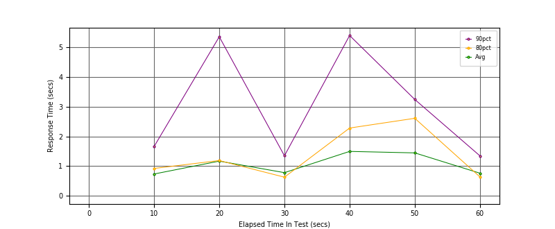
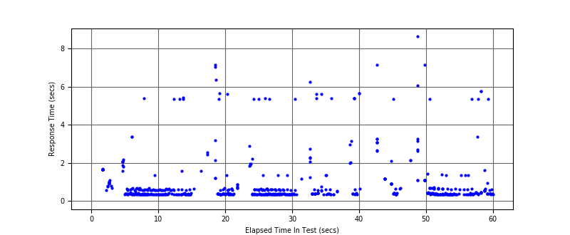
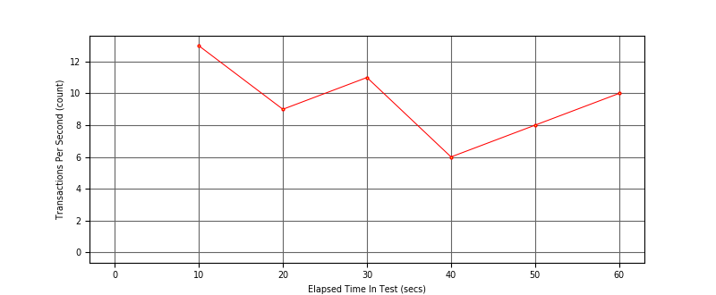

Performance Results Report
Summary
transactions: 602
errors: 0
run time: 60 secs
rampup: 0 secs
test start: 2018-05-20 16:13:11
test finish: 2018-05-20 16:14:09
time-series interval: 10 secs
workload configuration:
| group name | threads | script name |
|---|
| user_group-1 | 7 | regular_user.py |
| user_group-2 | 3 | intensive_user.py |
All Transactions
Transaction Response Summary (secs)
| count | min | avg | 80pct | 90pct | 95pct | max | stdev |
|---|
| 602 | 0.332 | 0.998 | 1.097 | 2.262 | 5.364 | 8.642 | 1.384 |
Interval Details (secs)
| interval | count | rate | min | avg | 80pct | 90pct | 95pct | max | stdev |
|---|
| 1 | 136 | 13.60 | 0.332 | 0.734 | 0.921 | 1.660 | 2.051 | 5.385 | 0.696 |
| 2 | 91 | 9.10 | 0.337 | 1.168 | 1.187 | 5.355 | 5.601 | 7.167 | 1.750 |
| 3 | 113 | 11.30 | 0.335 | 0.779 | 0.627 | 1.348 | 2.885 | 5.403 | 1.081 |
| 4 | 66 | 6.60 | 0.335 | 1.495 | 2.281 | 5.397 | 5.630 | 6.257 | 1.869 |
| 5 | 83 | 8.30 | 0.345 | 1.445 | 2.609 | 3.244 | 5.371 | 8.642 | 1.721 |
| 6 | 103 | 10.30 | 0.337 | 0.761 | 0.636 | 1.345 | 3.356 | 5.762 | 1.147 |
Graphs
Response Time: 10 sec time-series
Response Time: raw data (all points)

Throughput: 5 sec time-series

Custom Timer: Latency
Timer Summary (secs)
| count | min | avg | 80pct | 90pct | 95pct | max | stdev |
|---|
| 592 | 0.332 | 0.998 | 1.096 | 2.262 | 5.364 | 8.642 | 1.384 |
Interval Details (secs)
| interval | count | rate | min | avg | 80pct | 90pct | 95pct | max | stdev |
|---|
| 1 | 136 | 13.60 | 0.332 | 0.734 | 0.921 | 1.660 | 2.051 | 5.385 | 0.696 |
| 2 | 91 | 9.10 | 0.337 | 1.168 | 1.187 | 5.355 | 5.601 | 7.166 | 1.750 |
| 3 | 113 | 11.30 | 0.335 | 0.779 | 0.627 | 1.348 | 2.884 | 5.403 | 1.081 |
| 4 | 66 | 6.60 | 0.335 | 1.494 | 2.281 | 5.397 | 5.630 | 6.257 | 1.869 |
| 5 | 83 | 8.30 | 0.345 | 1.445 | 2.609 | 3.244 | 5.371 | 8.642 | 1.721 |
| 6 | 103 | 10.30 | 0.337 | 0.761 | 0.636 | 1.345 | 3.356 | 5.762 | 1.147 |
Graphs
Response Time: 10 sec time-series

Response Time: raw data (all points)

Throughput: 10 sec time-series
